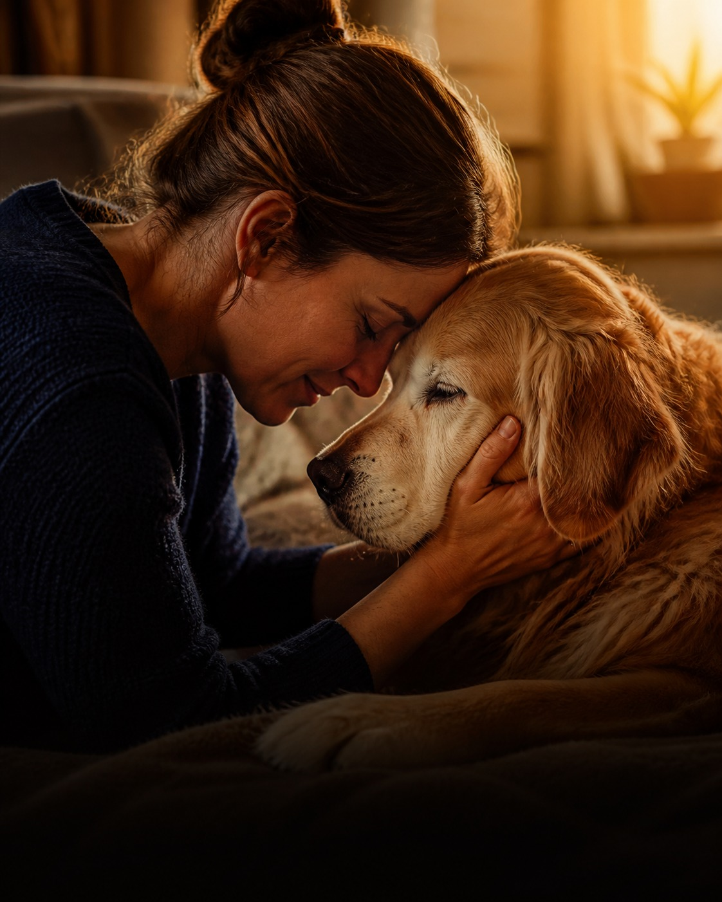

Tu perro o tu gato es parte de la familia. Asegúralo con el respaldo de BCI Seguros y la asesoría cercana de Mercurial: cotiza en línea en 2 minutos, sin trámites.

Un imprevisto no debería ser una decisión económica: el seguro cubre urgencias por enfermedad o accidente de tu perro o gato, más responsabilidad civil ante daños a terceros.
La póliza la emite BCI Seguros, líder en protección de mascotas en Chile con una red de más de 70 clínicas veterinarias, y te acompaña Mercurial, corredores regulados por la CMF (Registro N° 8929).
Cotizas en línea en 3 pasos y, en la red veterinaria, pagas solo tu copago con Bono Pet: directo en la clínica, sin reembolsos ni papeleo.
Todos incluyen telemedicina veterinaria ilimitada, vacunación, microchip, cremación, apoyo psicológico al tutor y orientación legal. Compara y elige el tuyo en el cotizador.
Coberturas en la red veterinaria BCI Seguros; vía libre elección aplica reembolso del 50% con topes según plan. Urgencias con tope de 2 eventos al año por mascota y carencia general de 30 días.
Este es el cotizador oficial de BCI Seguros para el convenio de Mercurial. Completa los 3 pasos y recibe tu cotización al instante.
¿Problemas para cotizar? ábrelo en una pestaña nueva
*Sólo se puede asegurar una mascota por póliza. Seguro sólo para perros y gatos: al contratar, la mascota debe tener entre 6 meses y 9 años con 364 días de edad, con permanencia máxima hasta los 12 años. No cubre preexistencias, ni mascotas destinadas a actividad laboral o reproducción, ni con enfermedad terminal.